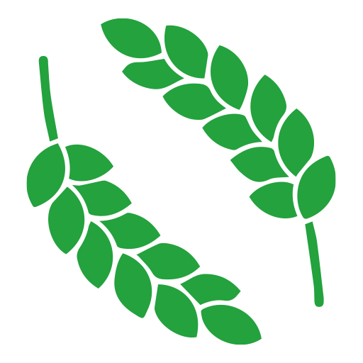

КОВАЛЕНКО Ігор Миколайович
доктор біологічних наук
професор
проректор з науково-педагогічної та навчальної роботи
У 1999 році отримав повну вищу освіту за спеціальністю “Агрономія” та здобув кваліфікацію вченого агронома з відзнакою;
2017-2018 – отримав ступінь вищої освіти магістр за спеціальністю “Екологія” та “Лісове господарство”;
2003 – здобув науковий ступінь кандидата біологічних наук;
2016 – здобув науковий ступінь доктора біологічних наук;
2017 – професор кафедри садово-паркового та лісового господарства;
2017 – доцент кафедри ботаніки та фізіології с.-г. рослин (нині екології та ботаніки) Сумського НАУ;
2017 – професор кафедри садово-паркового та лісового господарства Сумського НАУ.
1999 - агроном - насіннєвод у навчально-дослідному господарстві СДАУ Сумського району Сумської області;
2000-2017 – асистент, старший викладач, доцент, кафедри ботаніки та фізіології с.-г. рослин (нині екології та ботаніки);
2007-2022 – декан факультету агротехнологій та природокористування Сумського національного аграрного університету;
З 08.2022 призначений на посаду проректора з науково-педагогічної та навчальної роботи Сумського НАУ.
Член Національного екологічного центру України;
Член робочої групи з питань природно-заповідного фонду комітету Верховної Ради України з питань екологічної політики та природокористування;
Член експертної ради Міністерства освіти і науки України з питань атестації наукових кадрів з біологічних наук;
Член Сумської філії українського товариства ботаніків;
Член Наукового комітету Національної ради з питань розвитку науки і технологій;
Член Координаційної ради Національної академії аграрних наук України;
Член-кореспондент Лісівничої академії наук України;
Експерт Національного агентства із забезпечення якості вищої освіти з акредитації освітніх програм;
Член науково-технічної ради Національного природного парку "Деснянсько-Старогутський ";
Розбудова університету – це шлях, на якому важлива спільна візія поступу, а також окремі конкретні кроки, які об’єднуватимуть усю спільноту університету в досягненні поставленої мети. Дозвольте поділитися моїм баченням таких стратегічних цілей та конкретних складових, що лежать в основі їх реалізації.
підготовку фахівців, які розбудовують аграрний сектор та суспільство в цілому на засадах сталого розвитку;
наукові дослідження та інноваційну діяльність світового рівня;
формування свідомих громадян, лідерів, які здатні кидати виклик сьогоденню та збагачувати майбутнє.
Університет – простір новаторства, академічних свобод та критично-дискусійного спілкування;
Університет - каталізатор трансформації суспільства, де наші випускники стають лідерами, змінюючи світ на краще.
якість - забезпечення високої якості освіти, яка відповідає найвищим міжнародним стандартам.
інновації - творчий підхід до розв’язання проблем та впровадження новаторських ідей.
глобальна спрямованість - створення міжнародного середовища для обміну знаннями.
співпраця - спільна робота та партнерство як ключ до досягнення успіху.
соціальна відповідальність - побудова справедливого, етичного та сталого суспільства через освіту та дії.
якість - забезпечення високої якості освіти, яка відповідає найвищим міжнародним стандартам.
інновації - творчий підхід до розв’язання проблем та впровадження новаторських ідей.
глобальна спрямованість - створення міжнародного середовища для обміну знаннями.
співпраця - спільна робота та партнерство як ключ до досягнення успіху.
соціальна відповідальність - побудова справедливого, етичного та сталого суспільства через освіту та дії.
Це той шлях, який, я сподіваюся, ми пройдемо разом заради примноження здобутого та накреслення нових горизонтів розвитку Сумського національного аграрного університету
Управлінська та організаційна діяльність
Запровадження інформаційної системи управління університетом, яка передбачає розробку і реалізацію системи електронного документообігу,
управління освітнім і науковим процесом, фінансовими ресурсами.
Здійснення контролю за організацією навчальної, наукової, методичної та виховної роботи в університеті.
Створення галереї пам’яті випускників університету, які віддали свої життя за незалежність України.
Пошук та залучення джерел позабюджетного, грантового фінансування та бізнесу з метою покращення якості надання освітніх послуг, умов проживання здобувачів освіти, інфраструктурних змін.
Освітня діяльність
Удосконалення внутрішньої системи забезпечення якості освітньої діяльності, системи оцінювання та контролю якості освітніх послуг, які надає університет.
Підвищення рівня та якості освітніх послуг за рахунок впровадження інноваційних методів та технологій навчання; створення умов для використання викладачами технічних засобів для проведення інтерактивних лекцій.
Облаштування аудиторій сучасною комп’ютерною технікою для ефективного використання інформаційних технологій у навчальному процесі.
Реалізація проекту “Цифрова бібліотека” та забезпечення функціонування відкритого цифрового простору для навчальної, науково-дослідної роботи викладачів і студентів.
Розвиток формальної і неформальної освіти;
Забезпечити відкритий доступ до сучасних освітніх платформ;
Наукова та міжнародна діяльність
підтримка молодих вчених;
реалізація міжнародних грантових програм;
збільшення чисельності здобувачів вищої освіти, науково-педагогічних та наукових працівників, залучених до програм міжнародної академічної мобільності;
зростання обсягу фінансових надходжень до спеціального фонду за результатами наукових та науково-технічних робіт за проєктами міжнародного співробітництва.
підготовка наукових проєктів, направлених на повоєнне відновлення України;
зростання обсягу надходжень до спеціального фонду за результатами наукових і науково-технічних робіт за різними формами договірної тематики та надання наукових послуг;
Залучення до науково-дослідницької роботи талановитої молоді через співпрацю з Малою академією наук.
Проведення заходів наукового спрямування: міжнародних та всеукраїнських конференцій, семінарів, круглих столів, шкіл, конкурсів та олімпіад.
Сприяння постійному підвищенню кваліфікації науково-педагогічних працівників університету шляхом стажування в провідних освітніх та наукових установах України та закордону
Посилення академічної мобільності студентів і викладачів; розробка програм «подвійних дипломів» та якісна їх реалізація.
Створення умов для входження університету до провідних міжнародних освітніх та наукових товариств, асоціацій та організацій на правах повноцінного або асоційованого членства.
Сприяння покращенню позицій університету в українських та міжнародних рейтингах.
Збільшення програм подвійного дипломування із закордонними закладами освіти, мотивація розробників та робочих груп таких програм
Профорієнтаційна діяльність
Систематичне оновлення бази даних випускників університету у співпраці з випускниками університету для підтримання зв’язків у професійній сфері та для використання у маркетинговій та профорієнтаційній роботі.
Сприяти організації та проведенню на факультетах щорічних зустрічей випускників
Організація та проведення щорічних ярмарків вакансій та різноманітних заходів із залученням стейкхолдерів
Блок “Стратегія впровадження інновацій”
формування та вдосконалення електронної системи управління освітнім процесом;
забезпечення комплексної автоматизації управління, включно із системою електронного документообігу;
оновлення матеріально-технічної бази та придбання ліцензійного програмного забезпечення.
Підтримка та стимулювання творчості та новаторства серед університетської спільноти.
Молодіжна політика
Організація щоквартальних зустрічей із представниками студентського ректорату та профспілкової організації студентів;
Сприяння розвитку студентського самоврядування, підтримка студентських ініціатив, спрямованих на їх гармонійний розвиток, гарний відпочинок та комфорт, зокрема, створення студентського простору на кожному факультеті
Залучення студентів до наукової, інноваційної, творчої діяльності, в тому числі через їх участь у міжнародних ґрантових проєктах.
Постійний зворотній зв’язок надавача послуг (факультету), отримувача освітніх послуг (студента, аспіранта) та інших стейкхолдерів
Виховна робота
Розвиток університетських академічних традицій, демократичних засад організації життєдіяльності університету, утвердження національно-культурної
ідентичності і сприяння громадянській активності та відповідальності.
Сприяння розвитку культурного життя і дозвілля університетської спільноти, організація та проведення тематичних вечорів, переглядів фільмів, відвідування театральних вистав, музеїв, галерей, тематичних лекцій
Підтримка волонтерської діяльності викладачів та студентів університету.
Проведення патріотичних акцій, спрямованих на зміцнення національної єдності, підтримка військових частин, благодійні збори для ЗСУ та для потерпілих від війни тощо.
Забезпечення доступності до консультування та психологічної підтримки для студентів та працівників, які можуть відчувати стрес або тривогу через війну.
Організація тренінгів та семінарів з розвитку стресостійкості, психологічної реабілітації та самопідтримки
Господарська діяльність
Здійснення систематичного поточного ремонту в приміщеннях гуртожитків.
Забезпечення сучасним обладнанням для навчання та досліджень
Створення нових наукових лабораторій та центрів з урахуванням актуальних наукових напрямків і потреб викладачів та студентів.
Забезпечення швидкого та стабільного інтернет-з'єднання у всіх навчальних та адміністративних приміщеннях
Підтримка у належному стані укриттів (сховищ) з дотриманням всіх норм.
Облаштування сучасного мультифункціонального спортивного залу
запровадити напрямок: студенту - своє студентське житло на весь період навчання;
Сталий розвиток та інклюзивність
Реалізація політики, спрямованої на усунення дискримінації за будь-якою ознакою.
Проведення заходів з підвищення енергетичної ефективної
Популяризація екологічного способу життя, залучення до проведення екологічних акцій студентів різних факультетів та навчально-наукових інститутів
Сприяння досягненню цілей сталого розвитку ООН
Всебічна підтримка та партнерська взаємодія
взаємодія з органами державної влади та місцевого самоврядування, незалежними міжнародними та українськими громадськими інституціями;
збільшення кількості закордонних та українських ЗВО – партнерів СНАУ;
максимальна підтримка викладачів, співробітників та здобувачів вищої освіти, що перебувають у ЗСУ;
організація доступу до об'єктивної та неупередженої інформації про історію України, її здобутки та виклики, а також про успіхи та досягнення українців у різних сферах.
Буду вдячний за Ваші реакції, окреслення власного бачення “перших дій” нового ректора, конструктивні та змістовні пропозиції
ЗАЛИШТЕ СВОЇ ПИТАННЯ ТУТ:
Будь-яка програма дій – це орієнтація передусім на дві речі: самовідданість своїй справі та надійна команда! А тому підтримка кожного з вас – студентства, колег та співробітників є дуже важливою не тільки на цьому етапі, а на всьому шляху її реалізації!